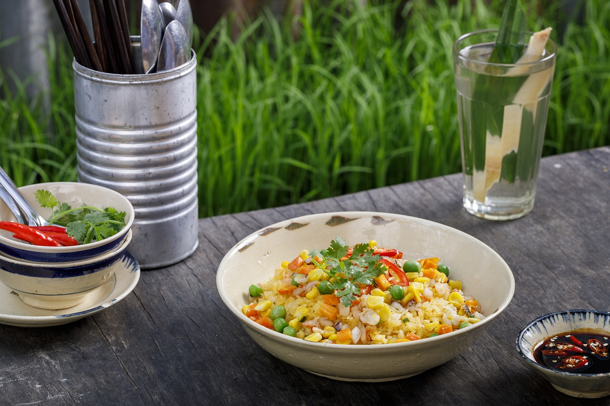

Papa Duck's Fried Rice

Papa Duck's Ingredients
- rice
- eggs
- onion
- shallots
- carrots
- black pepper
- salt
- red bell pepper
- peas
- sesame oil
Steps to take on your quest
- Make rice
- Leave rice be for a day. Do not touch it.
- Cut up your veggies
- Throw rice into your wok
- Leave it for a little while and throw in your veggies
- If you want to learn this properly, Papa Duck recommends asking Uncle Roger